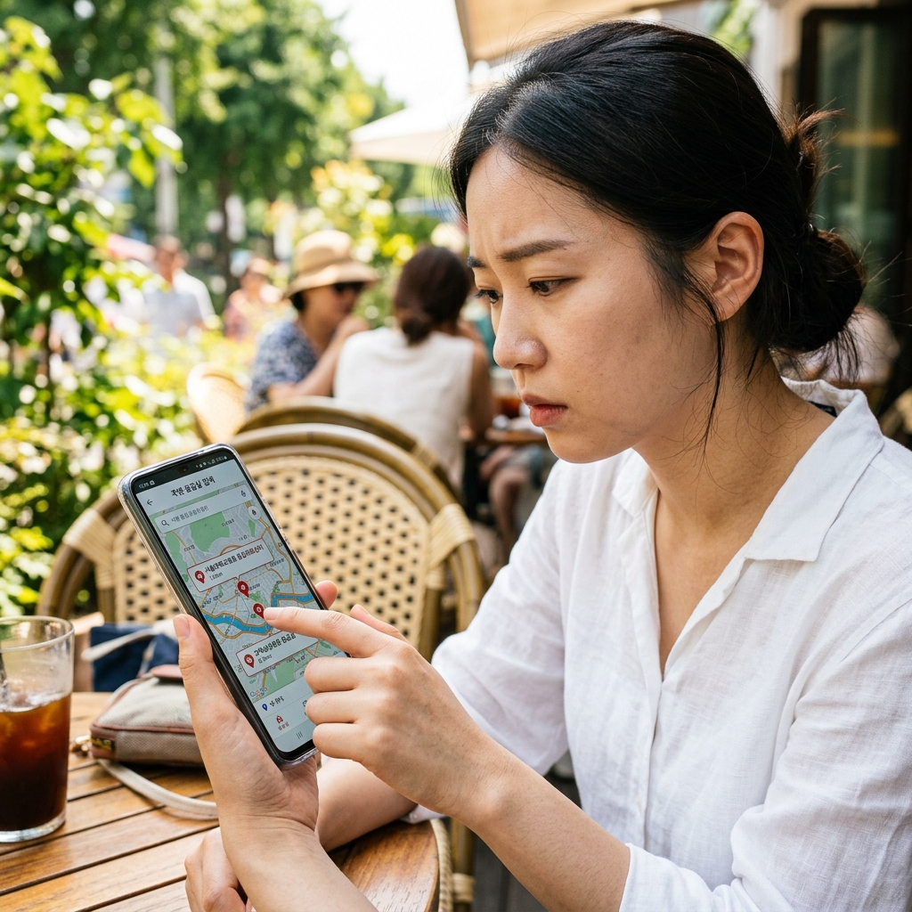
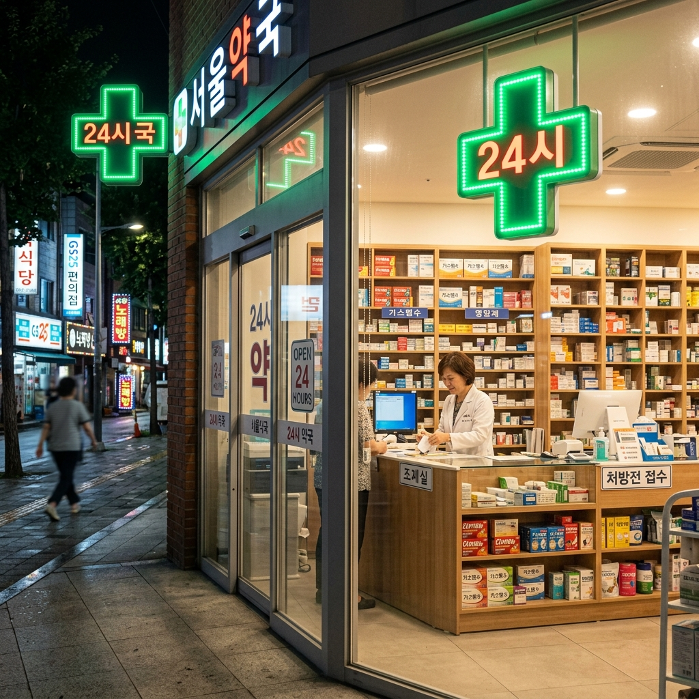
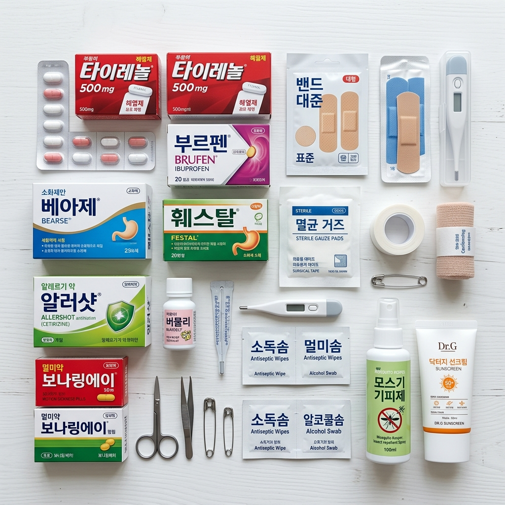

여름 휴가철 바다, 계곡, 산을 찾는 여행객이 늘면서 해파리 쏘임, 열사병, 익수 사고, 발목 염좌, 식중독 등 응급 상황도 함께 늘어납니다.
낯선 곳에서 갑작스러운 부상이나 질환이 발생하면 무엇부터 해야 할지 몰라 당황하게 되는 것이 당연합니다.
그러나 스마트폰 하나만 있으면 가장 가까운 응급실과 야간 약국을 10초 안에 찾을 수 있습니다.
상황의 심각도에 따라 119 신고와 1339 전화 상담, 응급의료포털 검색을 구분해서 사용하면 더욱 신속하게 도움을 받을 수 있습니다.
이번 글에서는 그 방법을 단계별로, 누구나 바로 따라 할 수 있도록 정리해 드립니다.
특히 어린 자녀와 함께 여행하는 부모님, 어르신을 모시고 다니는 분들께 꼭 필요한 정보입니다.
여행 가기 전 이 내용을 미리 스크랩해 두거나 가족과 공유해 두면 실제 상황에서 훨씬 침착하게 대처할 수 있습니다.

응급의료포털 e-gen(www.e-gen.or.kr)은 보건복지부가 운영하는 공식 포털로, 전국의 응급실 위치와 현재 대기 상황, 전문 진료과목 정보를 실시간으로 제공합니다.
스마트폰 브라우저에서 'e-gen'을 검색하거나 주소창에 www.e-gen.or.kr을 입력하면 바로 접속할 수 있습니다.
'응급의료기관 찾기' 버튼을 누르면 내 위치 기준으로 가장 가까운 응급실 목록이 나타나며, 진료과목 필터(소아과, 정형외과 등)를 설정할 수 있어 상황에 맞는 병원을 선택할 수 있습니다.
각 병원의 전화번호와 주소도 함께 제공되므로 길 안내와 연락을 동시에 진행할 수 있습니다.
또한 응급 키트, 응급처치 방법도 수록되어 있어 현장 대처에 참고할 수 있습니다.
모바일에서 사용하기 편한 레이아웃으로 구성되어 있어 서두르는 상황에서도 빠르게 조작 가능합니다.
오프라인 대비를 원한다면 여행 전 방문 지역의 주요 응급실 전화번호를 미리 저장해 두는 것도 좋은 방법입니다.
119는 즉각적인 위기 상황, 즉 의식을 잃었거나 호흡이 곤란하거나 심한 출혈이 있는 경우에 망설임 없이 전화하는 긴급 구조 번호입니다.
신고 후에는 신고자의 위치(도로명 주소 또는 랜드마크), 환자 상태, 인원수를 차분하게 말하면 구조대원이 신속히 출동합니다.
1339(응급의료 전화 상담)는 응급 여부를 판단하기 어려울 때 유용합니다. 24시간 전문 의료상담사가 연결되어 증상에 따른 대처 방향을 안내해 줍니다.
열이 많이 나는데 응급실에 가야 하는지, 아이가 벌에 쏘였는데 어떻게 해야 하는지 등 경계선 상의 상황에서는 1339에 먼저 전화해 보세요.
1339 상담은 무료이며, 지역에 따라 연결이 지체될 수도 있지만 일반적으로 빠르게 연결됩니다.
외국어 의료 상담이 필요하다면 한국관광공사의 관광불편신고센터(1330)를 이용할 수도 있습니다.
이 두 전화번호는 스마트폰 연락처에 미리 저장해 두는 것이 좋으며, 어린이도 알 수 있게 가르쳐 주세요.
| 연락처 | 용도 | 운영 |
|---|---|---|
| 119 | 즉각 위기(의식불명·심정지·심한 출혈·화재) | 24시간 |
| 1339 | 응급 여부 판단, 의료 전화 상담 | 24시간 |
| e-gen.or.kr | 가까운 응급실 검색, 실시간 대기 현황 | 24시간 온라인 |
| 1330 | 관광불편·외국어 의료 안내 | 24시간 |
인터넷 접속이 느리거나 e-gen 접속이 어려울 때는 네이버 지도나 카카오맵이 유용합니다.
검색창에 '응급실'을 입력하면 내 현재 위치 기준으로 가장 가까운 응급의료기관 목록이 거리와 함께 나타납니다.
'24시 약국' 또는 '야간 약국'을 검색하면 심야에도 운영 중인 약국을 찾을 수 있으며, 영업 중 표시가 실시간으로 반영됩니다.
카카오맵의 경우 '지금 영업 중' 필터를 켜두면 실제 영업 중인 의료기관만 걸러서 볼 수 있어 편리합니다.
별도로 약학정보원 DUR(ezdrug.mfds.go.kr) 홈페이지에서는 의약품 정보와 약국 찾기 서비스를 제공합니다.
여행지에서의 응급 상황에서 이 앱들을 곧바로 쓸 수 있도록 미리 최신 버전으로 업데이트해 두세요.
지도 앱은 와이파이 없이 LTE·5G만으로도 충분히 작동하므로 로밍 설정만 제대로 되어 있다면 해외 여행에서도 적용됩니다.

전국적으로 24시간 약국은 시·군 단위 이상 도시 지역에 1~3곳씩은 운영됩니다.
가장 빠른 방법은 네이버·카카오맵에서 '24시간 약국' 또는 '야간약국'을 검색하거나, 건강보험심사평가원 홈페이지(www.hira.or.kr)의 병원·약국 찾기 서비스를 이용하는 것입니다.
여행 지역이 인구가 적은 농어촌 지역이라면 24시간 약국이 없을 수 있으니, 이 경우 1339에 전화해 도움을 요청하거나 인근 읍내 약국의 야간 대기 여부를 확인하세요.
약국에서 처방전 없이 구입할 수 있는 일반의약품(OTC)의 종류는 한정되어 있으므로, 지병이 있는 분들은 여행 전 담당 의사에게 처방전을 넉넉히 받아두는 것이 좋습니다.
약사에게 증상을 설명하고 적합한 일반의약품을 추천받는 것도 가능하므로, 증상을 정확히 말씀해 주세요.
여름철 자주 필요한 의약품(해열제, 소화제, 모기 물린 데 바르는 연고 등)은 편의점에서도 구입할 수 있습니다.
2023년부터 일부 일반의약품은 편의점 판매가 확대되어, 파스, 해열진통제(아세트아미노펜 계열), 소화제 등을 야간에도 쉽게 구할 수 있습니다.
여행 전 아래 상비약을 미리 챙겨두면 현지에서 약국을 급하게 찾을 일이 크게 줄어듭니다.
해열진통제(타이레놀·애드빌 등): 발열, 두통, 근육통에 기본으로 대비할 수 있습니다.
소화제·지사제: 여행지 음식으로 인한 복통, 설사, 소화불량에 대비해 챙겨두세요.
멀미약: 차멀미나 배멀미가 있는 가족이 있다면 출발 30분~1시간 전 복용할 것을 준비합니다.
항히스타민제(알레르기약): 벌레 물림, 두드러기, 콧물 등에 효과적입니다.
상처 소독·밴드 세트: 계곡이나 바위 위에서 발생하는 찰과상에 즉각 대처할 수 있습니다.
모기약·해충 기피제: 여름 야외 활동에는 필수입니다. DEET 성분 또는 이카리딘 성분 기피제가 효과적입니다.
자외선 차단제(SPF50+)와 화상 연고: 강한 여름 햇볕에 의한 일광화상에 대비합니다.

국내 여행 중 다치거나 병원에 가게 되었을 때 여행자보험이 있다면 비용의 일부를 보상받을 수 있습니다.
여행자보험은 출발 전 보험사 앱 또는 홈페이지에서 저렴하게(1박 기준 수천 원대) 가입할 수 있습니다.
청구를 위해 반드시 챙겨야 할 서류는 진료 영수증, 진단서(또는 진료확인서), 처방전입니다. 현장에서 이 서류를 발급받아 두세요.
귀가 후 가입 보험사 앱이나 고객센터를 통해 사진 촬영 또는 스캔 서류를 첨부해 청구하면 됩니다.
청구 가능 기간은 보험사마다 다르지만 대개 사고 발생 후 3년 이내이며, 서류를 잘 보관해 두는 것이 중요합니다.
보험 약관에서 면책 조항을 미리 확인해 두면 청구 가능 여부를 사전에 파악하는 데 도움이 됩니다.
가족 단위 여행이라면 가족 단체 여행자보험도 있으니 가입 전 비교해 보세요.
국가 지정 해수욕장과 주요 관광지 계곡에는 여름 성수기 동안 안전 요원과 응급처치 거점이 운영됩니다.
해수욕장에서는 이안류, 심한 파도, 해파리 쏘임 등 사고가 발생했을 때 인근 안전 요원 초소에 도움을 요청하는 것이 가장 빠릅니다.
초소 내 AED(자동심장충격기)와 기본 응급처치 장비가 비치되어 있으며, 안전 요원이 기본 응급처치를 실시한 뒤 119에 연계합니다.
국립공원 탐방로와 주요 계곡에도 산악구조대 거점이 있으며, 국립공원 내 사고 시 국립공원 긴급 전화(054-973-3119 등 지역마다 상이)를 이용할 수 있습니다.
인파가 많은 여름철 인기 해수욕장의 경우 응급 이동이 지체될 수 있으므로, 혼잡한 성수기보다 평일 방문을 권장합니다.
어린이와 함께라면 반드시 생명조끼를 착용하고, 아이의 손목에 비상 연락처를 적어 둔 팔찌를 채워 두세요.
보호자는 아이 시야 범위 밖으로 벗어나지 않는 것이 가장 중요한 예방 수칙입니다.
열사병: 그늘진 서늘한 곳으로 이동시키고, 차가운 물수건으로 목, 겨드랑이, 사타구니를 식혀 주면서 119에 신고합니다. 의식이 있다면 시원한 물을 조금씩 마시게 합니다.
익수(물에 빠진 경우): 구조 후 호흡이 없다면 즉시 심폐소생술(CPR)을 시행하고 119에 신고합니다. 물을 빼내려고 배를 누르거나 거꾸로 들지 않습니다.
발목 염좌·골절 의심: 환부를 움직이지 않게 고정하고, 냉찜질로 부기를 줄인 후 병원으로 이동합니다.
해파리 쏘임: 쏘인 부위를 문지르지 말고 바닷물(민물 금지)로 촉수를 제거한 뒤 신용카드 등으로 독침을 긁어냅니다. 증상이 심하면 즉시 119에 신고합니다.
식중독: 구토 시 옆으로 뉘어 기도 확보, 충분한 수분 보충(이온 음료)을 하고, 설사가 심하거나 혈변이 있으면 즉시 병원을 찾습니다.
벌 쏘임: 알레르기 반응(두드러기, 호흡 곤란)이 나타나면 지체 없이 119에 신고합니다. 신용카드로 독침을 긁어 제거하되 짜내지 않습니다.
이 모든 상황에서 공통적으로 침착함을 유지하고 전문가의 도움을 구하는 것이 가장 중요합니다.
여행지 응급 대비는 출발 전부터 시작됩니다.
방문 지역의 가장 가까운 응급실·병원 연락처를 스마트폰에 미리 저장해 두세요. e-gen 홈페이지에서 지역을 입력하면 바로 확인할 수 있습니다.
동행 가족 중 지병이 있는 분(심장병, 당뇨, 고혈압 등)의 복용 약과 주치의 연락처를 메모해 두고, 혹시 모를 상황에 대비하세요.
여행자보험은 저렴하게 가입할 수 있으니 출발 당일 아침에도 가입 가능합니다. 국내 여행이라도 챙겨두면 마음이 한결 편합니다.
어린이와 함께라면 소아과 응급실이 있는 병원을 별도로 확인해 두면 유사시 헤매지 않아도 됩니다.
캠핑이나 계곡 방문 시 기상 예보를 꼭 확인하고, 호우 주의보나 경보 발령 시에는 계획을 유연하게 바꿀 준비를 하세요.
모든 준비를 완료했다면, 마음 편히 즐거운 여름 여행을 떠나세요. 준비된 여행자는 어떤 상황에서도 당황하지 않습니다.